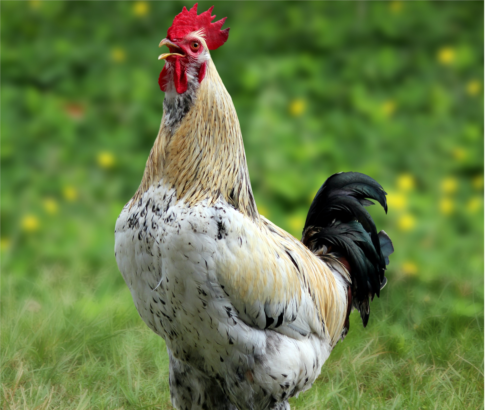
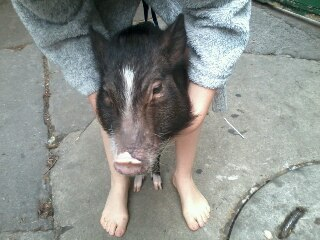

Chicken
From Wikipedia: Chicken
The chicken (Gallus gallus domesticus) is a domesticated red junglefowl species that are originally from Southeast Asia. They have also partially hybridized with other wild species of junglefowls (the grey junglefowl, Ceylon junglefowl, and green junglefowl). Rooster and cock are terms for adult male birds, and a younger male may be called a cockerel. A male that has been castrated is a capon. An adult female bird is called a hen, and a sexually immature female is called a pullet. Humans keep chickens primarily as a source of food (consuming both their meat and eggs) or as pets. Traditionally they were also bred for cockfighting, which is still practiced in some places. Chickens domesticated for meat are broilers and for eggs are layers.
Mini Pig
From Wikipedia: Mini Pig
Miniature Pigs, also called mini pig, or Pygmy pig, or teacup pig, are small breeds of domestic pig, such as the Vietnamese Pot-Bellied pig, Göttingen minipig, Juliana pig, Choctaw hog, or Kunekune (and specimens derived by crossbreeding these breeds). Miniature pigs can usually be distinguished from other pigs by their pot belly, a swayed back, a chubby figure, a rounded head, a short snout, short legs, a short neck, and a tail with thick hair at the end. Typically, miniature pigs will range in weight from about 70 pounds (32 kg) to 150 pounds (68 kg). Miniature pigs are commonly kept as pets. Realistic sizes of pigs vary from pig to pig; genetics drives the growth, along with appropriate nutrition and care. Domesticated miniature pigs can vary from 75 lbs to 200lbs. However, since pigs can breed years before they fully mature, unscrupulous or ignorant breeders may show off parent pigs which are not fully grown themselves, so have not reached their full adult size.
Domestic Cat
From Wikipedia: Cat

The cat (Felis catus) is a domestic species of small carnivorous mammal. It is the only domesticated species in the family Felidae and is commonly referred to as the domestic cat or house cat to distinguish it from the wild members of the family. Cats are commonly kept as house pets but can also be farm cats or feral cats; the feral cat ranges freely and avoids human contact. Domestic cats are valued by humans for companionship and their ability to kill small rodents. About 60 cat breeds are recognized by various cat registries.